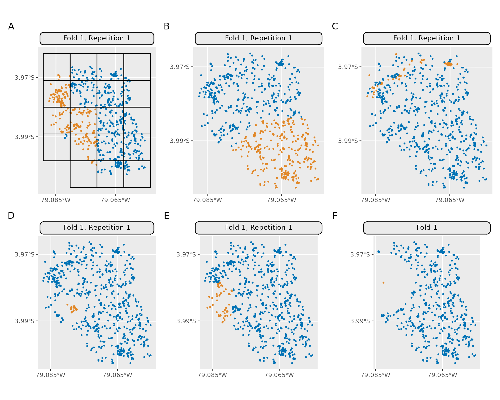

3D Visualization (spatiotemporal)
{mlr3spatiotempcv} makes use of {plotly} to create the 3D plots for visualizing spatiotemporal folds. Arranging multiple 3D plots in {plotly} is done via 3D subplots.
Unfortunately, {plotly}’s subplot implementation is not dynamic. This
means that multiple “scene” objects need to be specified in
plotly::layout() to determine the coordinates of the
respective subplot. Depending on the number of chosen folds by the user
in autoplot(), a different number of scenes with different
coordinates needs to be given to align the plots properly.
Hence, manual action is needed to create a properly aligned grid of 3D plots.
Below is an example how to create a 2x2 grid showing four folds as 3D
subplots. It makes use of the returned 3D plotly objects which are
returned in a list by autoplot():
library(mlr3)
library(mlr3spatiotempcv)
task_st = tsk("cookfarm_mlr3")
task_st$set_col_roles("SOURCEID", roles = "space")
task_st$set_col_roles("Date", roles = "time")
resampling = rsmp("sptcv_cstf", folds = 5)
pl = autoplot(resampling, task_st, c(1, 2, 3, 4),
crs = 4326, point_size = 3, axis_label_fontsize = 10,
plot3D = TRUE
)
# Warnings can be ignored
pl_subplot = plotly::subplot(pl)
plotly::layout(pl_subplot,
title = "Individual Folds",
scene = list(
domain = list(x = c(0, 0.5), y = c(0.5, 1)),
aspectmode = "cube",
camera = list(eye = list(z = 2.5))
),
scene2 = list(
domain = list(x = c(0.5, 1), y = c(0.5, 1)),
aspectmode = "cube",
camera = list(eye = list(z = 2.5))
),
scene3 = list(
domain = list(x = c(0, 0.5), y = c(0, 0.5)),
aspectmode = "cube",
camera = list(eye = list(z = 2.5))
),
scene4 = list(
domain = list(x = c(0.5, 1), y = c(0, 0.5)),
aspectmode = "cube",
camera = list(eye = list(z = 2.5))
)
)
Note: The image shown above is a static version created with
plotly::save_image().
Unfortunately, titles in subplots cannot be created dynamically. However, there is a manual workaround via annotations show in this RPubs post.
Examples of spatial partitioning (2D)
The following plots are based on a three fold partitioning of the ecuador
example task. Method mlr_resampling_sptcv_cstf is omitted
here as the ecuador task does not have a factor grouping
variable which is required by this method. The partitions created on
this dataset do not claim to necessarily make sense in practice - they
should only contrast the individual methods against each other. The
source code can be found here.
#> Error in get(paste0(generic, ".", class), envir = get_method_env()) :
#> object 'type_sum.accel' not found
| Identifier | Method Name |
|---|---|
| A | mlr_resampling_spcv_block |
| B | mlr_resampling_spcv_coords |
| C | mlr_resampling_spcv_env |
| D | mlr_resampling_spcv_disc |
| E | mlr_resampling_spcv_tiles |
| F | mlr_resampling_spcv_buffer |